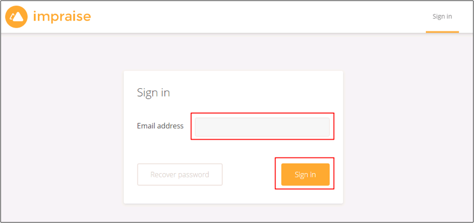

Contact the Impraise Support team (support@impraise.com) and request that they enable SAML 2.0 for your account.
Include the following Metadata URL:
Sign into the Okta Admin dashboard to generate this value.
The Impraise Support team will process your request and provide you with their metadata URL in the following format:
https://app.impraise.com/account/auth/saml/metadata?oid=[yourOid]
In Okta, select the General tab for the Impraise app, then click Edit.
Enter the [yourOid] value (from step 3, above) into the Organization Identifier field.
Click Save.
Done!
Notes:
SP-initiated flows and IDP-initiated flows are supported.
Just In Time (JIT) provisioning is not supported.
Go to https://app.impraise.com/account/login URL.
Enter your email address.
Click Sign in.
